MeshCNN has different architectures for classification and segmentation. For segmentation,
it uses a UNet architecture with residual learning blocks.
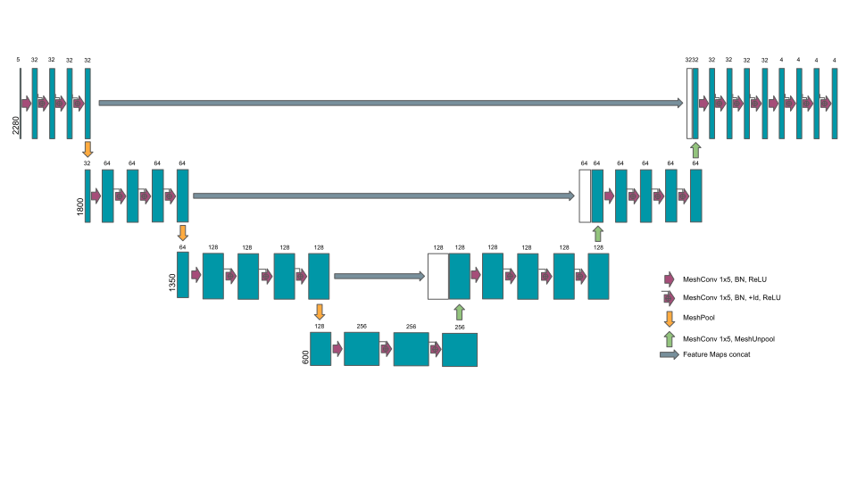
MeshCNN ResUNet
MeshCNN uses mesh edges as primitives. For each each, it computes 5 input features:
Dihedral angle between two incident faces
2 opposite vertex angles
2 ratios of edge length wrt triangle height
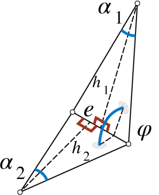
Input Edge Features
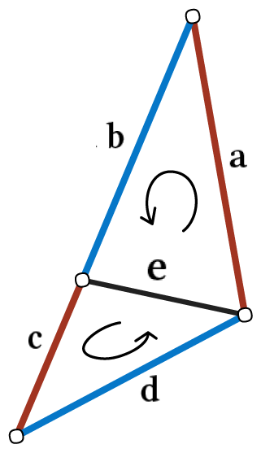
Mesh Convolution
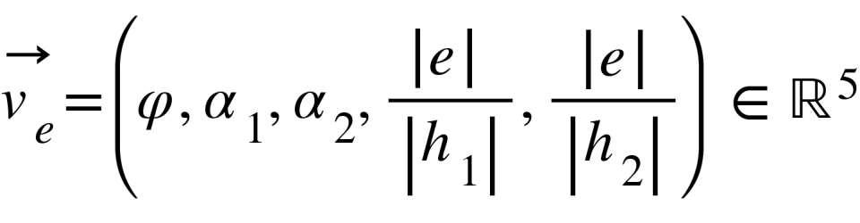
All these features are relative and implicitly invariant to translation, rotation and unform scaling.
Convolution is applied to the 1-ring neighbourhood of each edge, made of 5 edges (4 edges and itself). Edge
order invariance is ensure by applying symmetric functions:
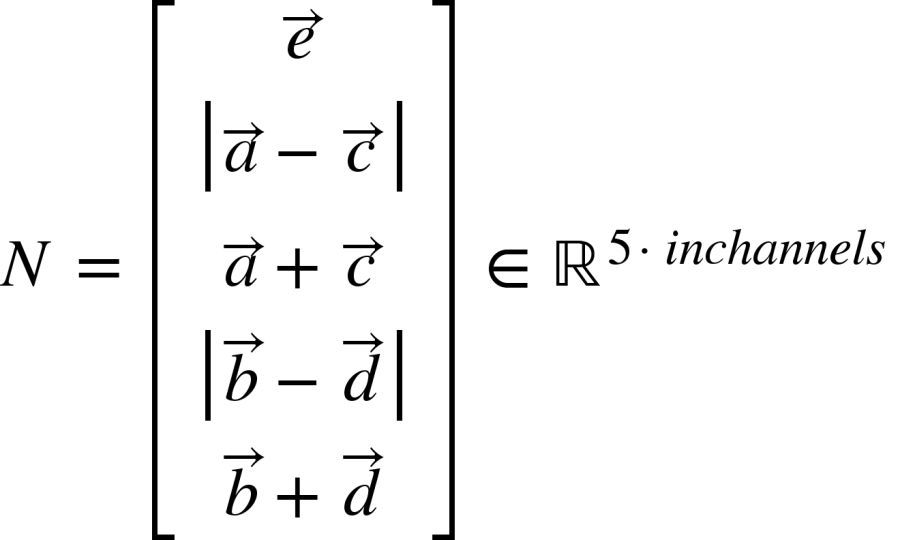
In the pooling layer, a mesh is simplified to a target number of edges (model parameter) collapsing sequentially
those edges with the smallest feature norm. A collapsed edge is removed and the features of the neighbouring
edges are averaged by pairs. The correspondence between new and old edges is saved and used during unpooling to
recover the original mesh structure.
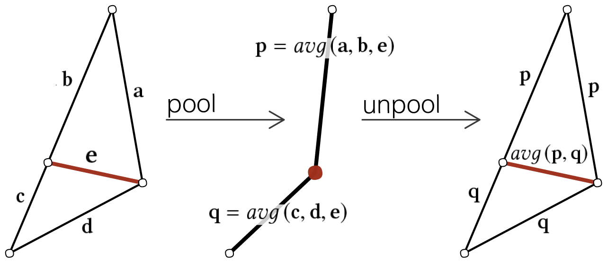
Mesh Pooling/Unpooling
ABC Dataset
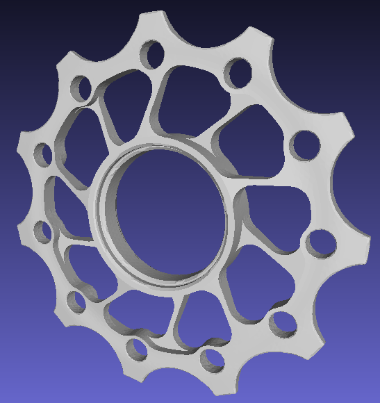
ABC dataset model
1M CAD models
Explicitely parameterized surfaces/curves
High-quality triangle meshes
Method
MeshCNN improvements
Initial experiments showed that MeshCNN is not optimized to handle large meshes. The experiments in the
original paper use datasets with small meshes, having at most a few thousand edges.
The first bottleneck is GPU memory usage, which grows quadratically with the number of mesh edges. Each pooling
layer keeps in memory a tensor of \(edges^{2}\) elements mapping edge collapses (MeshUnion class).
This makes impossible training with half of the meshes in the ABC dataset (a single pooling operation in a 50K-edge mesh would allocate ~18GB of memory just for edge collapse bookkeeping!).
\[
U = \begin{bmatrix}
u_{11} & u_{12} & \dots \\
\vdots & \ddots & \\
u_{N1} & & u_{NM}
\end{bmatrix} \begin{cases}
M = \text{#input edges}\\
N = \text{#output edges}\\
u_{ij} = \text{# collapses of input edge i into output edge j}
\end{cases}
\],
The tensor though is inherently sparse, therefore we reimplemented MeshUnion and MeshUnpool classes using torch.sparse_coo_tensor
and sparse operations such as torch.sparse.mm and torch.sparse.sum.
The memory consumption at function create_GeMM in the MeshConv
layer was also reduced to less than a half by deleting temporary tensors once they're not needed and rewriting the symmetric functions so that they are done in place.
Another important bottleneck is that the edge collapsing at the MeshPool layer is done sequentially in CPU. As a result, MeshCNN training is
CPU-bound and GPU utilization is low (under 30% in a NVIDIA Tesla P100). Training times become impractical for small datasets
(9h per epoch for 1K meshes of 35K edges). To alleviate this problem, we modified MeshCNN code to allow for distributed training across multiple CPUs, GPUs and
even nodes. Using torch.nn.parallel.DistributedDataParallel, each batch
is split and processed by identical instances of the model in separate devices, averaging the gradients for each node during the backwards pass.
Thanks to these optimizations we could train MeshCNN with ABC models of average size (~35K edges) and typical batch sizes (~10), having still room to increase
the number of pooling layers.
Dataset preprocessing
As first preprocessing step for the compilation of dataset, we detect and exclude non-manifold meshes, since they're not supported by MeshCNN.
Additionally, small connected components (<10% of total faces) within a model are likely to become non-manifold during pooling. Models with such small
components had to be excluded with the original MeshCNN code. To overcome this problem, we've modified MeshCNN to skip edge collapses that would result
in a non-manifold mesh.
Non-manifold mesh (Model 34471)
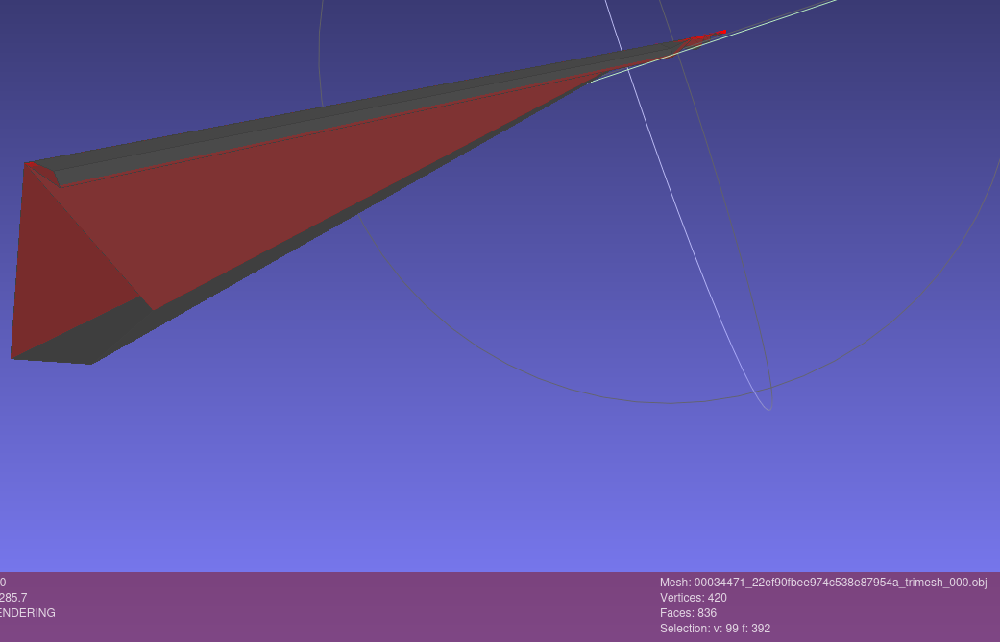
Small component (Model 49466)
Dataset remeshing
ABC meshes have very different sizes, from 5K-200K edges
MeshCNN needs input meshes of similar size
Datasets of meshes of average size (~35K edges) compiled from ABC dataset are too small (~1K samples out of first 10K ABC models)
Training times for 35K-edge meshes are impractical
PAC learning framework defines a worst case training set size m for a classifier with VC dimension d to ensure a maximum
test error deviation \(\epsilon\) with a certainty of \( 1 - \eta \):
\[
m = \mathcal{O}\big(\frac{d + \log(\frac{1}{\eta})}{\epsilon}\big)
\]
The VC dimension of a (binary) NN classifier is \(\mathcal{O}(|w|)\)
MeshCNN has 2.2M weights in its original config (4 conv layers)
The larger the input meshes, the more conv. layers are needed
Worst-case training set size for small meshes (~1K edges) is >2M samples
Solution: Remesh ABC models using cadmesh to get a target size of 2K edges
Most models are too large to fit into 2K edges with reasonable error w.r.t original surfaces
Meshing error controlled by setting custom face size constraints in gmsh (MeshSizeFromCurvature)
10K meshes obtained from the first 170K ABC models
Dataset augmentation
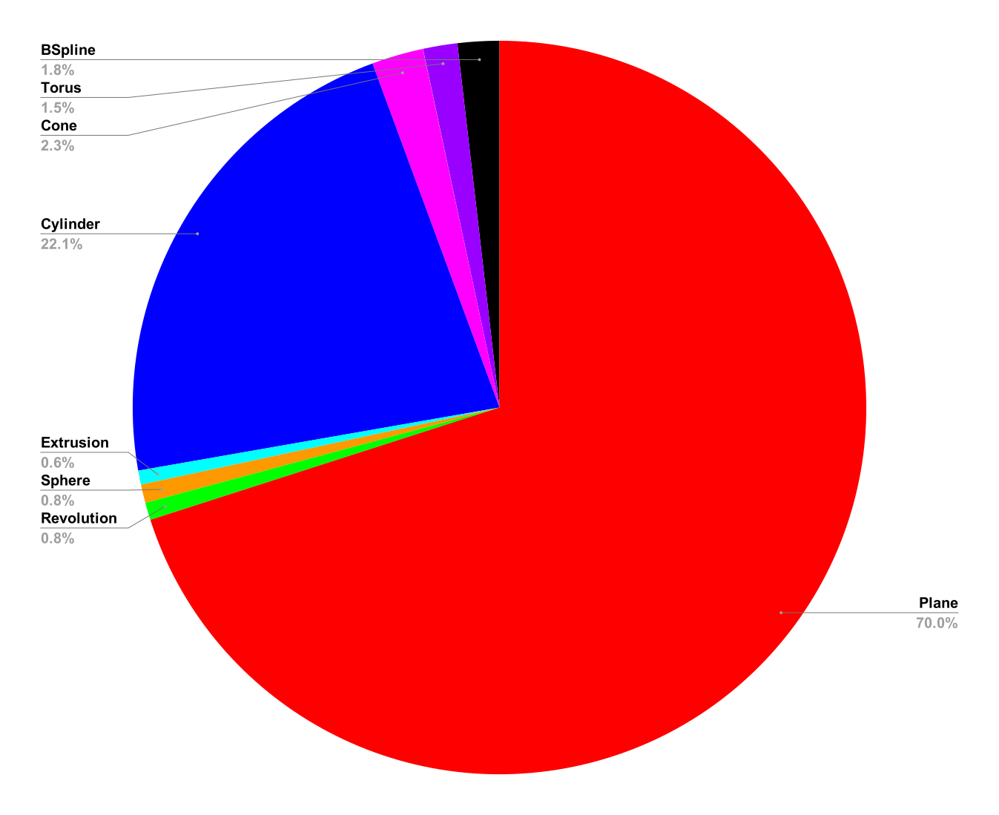
Edge class frequencies on 35K-edge mesh dataset
Surfaces in ABC dataset models are predominantly planes and cylinders, with less than 10% of the surfaces belonging to other classes. This imbalance in the
surface class occurrence biases the model towards the overrepresented classes and impedes the learning of the underrepresented surface types.Experiments applying
a weighted loss function to penalize more misclasiffications of the underrepresented classes show no noticeable improvement.
The class imbalance was addressed by resampling. Any model made of exclusively of planes and cylinders was discarded, hence downsampling these classes. Additionally, synthetic samples were
created for the other classes to upsample them. The synthetic samples were created using gmsh to mesh parametric surfaces with uniformly distributed random parameters.
The first synthetic samples were open meshes made of a single surface, thus having a fine control in the class upsampling. This approach has two problems:
1. MeshCNN applies boundary-preserving edge collapses during pooling. As a result, the prediction accuracy near the mesh boundary is severely affected
2. The model cannot learn to identify class boundaries with Synthetic samples made of a single surface.
Thefore, the final synthetic dataset was composed of closed meshes made of multiple surface types.
Open cone prediction (original size)
Open cone prediction (last pool)
Plane
Cylinder
Cone
Torus
BSpline
Sphere
Revolution
Extrusion
Other
Closed cone ground truth
Closed sphere ground truth
Plane
Cylinder
Cone
Torus
BSpline
Sphere
Revolution
Extrusion
Other
Closed Cylinder ground truth
Closed Torus ground truth
Plane
Cylinder
Cone
Torus
BSpline
Sphere
Revolution
Extrusion
Other
Closed BSpline ground truth
Closed Extrusion ground truth
Plane
Cylinder
Cone
Torus
BSpline
Sphere
Revolution
Extrusion
Other
Closed BSpline Revolution ground truth
Closed Polygon Revolution ground truth
Plane
Cylinder
Cone
Torus
BSpline
Sphere
Revolution
Extrusion
Other
Regularization
To reduce overfitting we've used AdamW optimizer,
a version of Adam that includes decoupled weight decay regularization [3]:
\[
\boldsymbol{\theta_{t}} \leftarrow \boldsymbol{\theta_{t-1}} - \eta_{t}\left( \frac{\alpha \boldsymbol{\hat{m}_{t}}}{\sqrt{\boldsymbol{\hat{v}}_{t}}+\epsilon} + \lambda \boldsymbol{\theta_{t-1}}\right)
\]
Experiments
Ice breaker
Train set size
262
Test set size
30
Mesh size
<=5000 edges
Convolution #channels
32, 64, 128, 256
Pooling target sizes
4000, 3000, 1800
Batch size
4
Optimizer
Adam
Test accuracy
91.6% (15 epochs)
In this first experiment we trained MeshCNN with a toy ABC subset of size and mesh resolutions similar to those
used in [1], with the following objectives:
Validate training setup, label generation in particular
Early feasibility check
Identify potential changes required in MeshCNN and dataset preprocessing
As a result of the experiment, we identified the memory and processing bottlenecks as well as required preprocessing steps
explained in the methodology.
.
Model 36631 (prediction)
Plane
Cylinder
Cone
Torus
BSpline
Sphere
Revolution
Extrusion
Other
35K-edge mesh dataset
Train set size
862
Test set size
93
Mesh size
[33000,35000] edges
Convolution #channels
32, 64, 128, 256
Pooling target sizes
20000, 15000, 10000
Batch size
10
Optimizer
Adam
Test accuracy
89.5% (19 epochs)
Onced the issues observed in the first experiment were solved a second larger dataset was compiled with meshes of
sizes close to the ABC average. The meshes in the dataset have size differences (in #edges) of at most 10%, since
mixing mesh of very different sizes may have an impact on the network performance (as is the case with CNNs for images).
Model 38019 (prediction)
Model 38019 (ground truth)
Plane
Cylinder
Cone
Torus
BSpline
Sphere
Revolution
Extrusion
Other
Model 38191 (prediction)
Model 38191 (ground truth)
Plane
Cylinder
Cone
Torus
BSpline
Sphere
Revolution
Extrusion
Other
The model learns to predict the two most frequent classes (plane and cylinder surfaces), but no the rest. The optimization seems to stay at a local minima in the loss
function, most probably due to the imbalance in the class occurrence.
Remehesed & resampled dataset
Train set size
4000
Test set size
1000
Mesh size
[1920-2000]
Convolution #channels
32, 64, 128, 256, 512
Pooling target sizes
1600, 1280, 1024, 850
Batch size
10
Optimizer
AdamW
Test accuracy
85% (20 epochs)
This dataset contains 5000 ABC models sampled so they don't contain exclusively plane and cylinder surfaces, and remeshed to 2000 edges. The model has an additional conv+pooling stage and uses AdamW optimizer.
Even with the reduced mesh size, the increased capacity and the surface class resampling, the model shows a poor accuracy prediciting surfaces other than planes and cylinders.
Model 25725 (prediction)
Model 25725 (ground truth)
Plane
Cylinder
Cone
Torus
BSpline
Sphere
Revolution
Extrusion
Other
Model 170737 (prediction)
Model 170737 (ground truth)
Plane
Cylinder
Cone
Torus
BSpline
Sphere
Revolution
Extrusion
Other
Model 1578 (prediction)
Model 1578 (ground truth)
Plane
Cylinder
Cone
Torus
BSpline
Sphere
Revolution
Extrusion
Other
Model 16769 (prediction)
Model 16769 (ground truth)
Plane
Cylinder
Cone
Torus
BSpline
Sphere
Revolution
Extrusion
Other
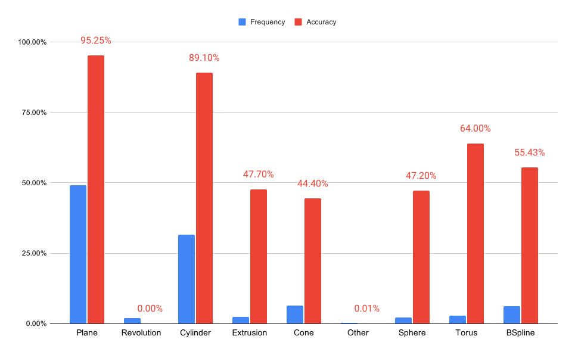
Surface type frequency and prediction accuracy
Remeshed, resampled and augmented
Train set size
5104(ABC)+5100(synth)
Test set size
1275
Mesh size
[1960-2000]
Convolution #channels
32, 64, 128, 256, 512
Pooling target sizes
1600, 1280, 1024, 850
Batch size
10
Optimizer
AdamW
Test accuracy
85.6% (20 epochs)
In this final experiment the dataset is increased to more than 10K samples, half of which are synthetic closed meshes made of randomly parameterized surfaces added to upsample
the underrepresented surface types. The results show an important improvement in the prediction accuracy for sphere surfaces. There's no improvement however in the accuracy for other classes.
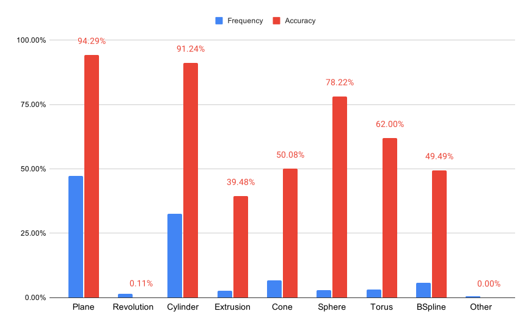
Surface type frequency and prediction accuracy
Discussion and Future Work
In this project we've evaluated the performance of MeshCNN predicting mesh segmentation by surface type in CAD models from ABC dataset. The outcome of the experiments helped us identify multiple
root causes for the poor accuracy exhibited by the tested models, some intrinsic to the problem definition, others related to architectural and implementation shortcomings of MeshCNN.
1. CAD Surface type imbalance and overlapping
>90% surfaces in CAD models are planes or cylinders
Memory bottleneck solved by using sparse matrices for edge collapse accounting in pooling/unpooling
Multiple research papers on mesh simplification on GPU, some using edge collapses [4][5]
3. Mesh pooling limitations
Boundary-preserving edge collapsing inhibits learning segmentation near boundaries in open meshes
Mesh can be simplified down to slightly less half their original edge count (vs 10% for images)
Some surface types can be easily identified by their local curvature: sphere, cylinder, cone, torus
General extrusion and revolution surfaces are more general concepts, not identifiable by local features, CNN must pool them until they fit the receptive field
Non-uniform pooling caused by adaptive edge collapsing further inhibits the application of larger receptive fields to some mesh regions
Model 12235 last pool (prediction)
Model 12235 last pool (ground truth)
Plane
Cylinder
Cone
Torus
BSpline
Sphere
Revolution
Extrusion
Other
Appendix
Presentations
Project proposal
Tech presentation
References
[1] Rana Hanocka, Amir Hertz, Noa Fish, Raja Giryes, Shachar Fleishman and Daniel Cohen-Or. 2019. MeshCNN: A Network with an Edge. ACM Trans. Graph. 1, 1 (Feb 2019). https://ranahanocka.github.io/MeshCNN
[2] Koch, Sebastian and Matveev, Albert and Jiang, Zhongshi and Williams, Francis and Artemov, Alexey and Burnaev, Evgeny and Alexa, Marc and Zorin, Denis and Panozzo, Daniele. 2019. ABC: A Big CAD Model Dataset For Geometric Deep Learning. The IEEE Conference on Computer Vision and Pattern Recognition (CVPR) (June 2019). https://deep-geometry.github.io/abc-dataset